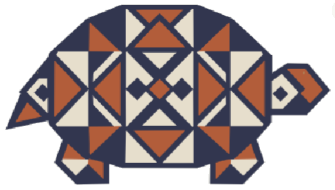
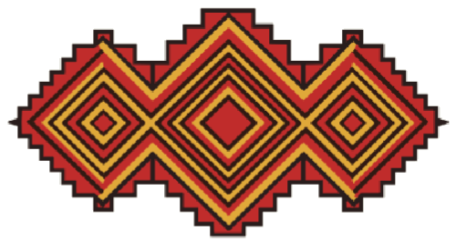
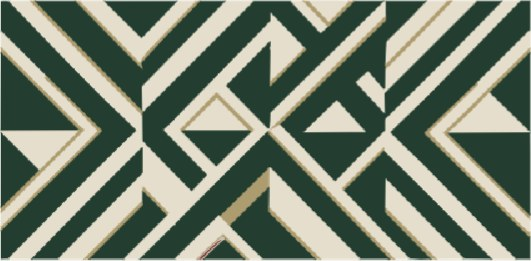
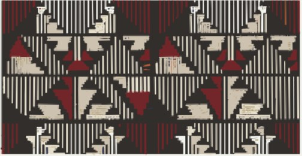

Akwete is woven by Igbo women in Akwete, also called Ndoki, in Ukwa East, Abia State. It is one of the best known hand-woven textiles in West Africa, and its story is still being written by the women who make it.
How it came to be.
Part of Akwete’s story is written down and part is remembered, so dates and names differ between accounts.
Women, looms and families
Woven in Ndoki, taught at home
Akwete cloth is woven by women on tall vertical looms, while the men of the community traditionally build the looms. Skills pass from mothers and aunts to daughters. Girls often start at six or seven, and many weavers keep working into their eighties.
At the loom: pulling the pattern up through the warp by hand.
Around the 1850s
Dada Nwakata
Oral tradition places the weaver Dada Nwakata in the 1850s. She is said to have received designs in dreams, worked in secret, and brought imported yarn and silk into her cloth. Many researchers think the craft is older than the nineteenth century and developed over a long time, since early European visitors already praised its quality.
The nineteenth century
Patrons, trade and a full-time craft
Ijo communities such as the Ibani, Okrika and Kalabari traded for Akwete cloth and commissioned particular patterns and colours. As the palm oil trade declined, weaving grew from part-time work into a full-time occupation. Weavers moved to imported cotton, and later to machine-made yarn, which improved quality and widened the market.
A weaver at work on a striped and checked cloth.
1946
The broadloom
A larger loom arrived that cut weaving time and allowed wider cloth. It was expensive, so many weavers could not afford it.
A tradition of ownership
Every motif has a maker
Weavers say they know more than a hundred motifs, yet rarely use more than three or four on one cloth. The creator of a new motif has traditionally held an unwritten copyright, and some motifs are described as gifts of inspiration or come from dreams. A women's weaving society later grew into a collective focused on quality and on protecting designs.
Diamond and comb-like shapes appearing row by row.
Today
From heritage to wardrobe
Designers now cut Akwete into dresses, kaftans, trousers, shoes and interiors. Ekwueme Federal University Ndufu has set up a weaving centre with a year-long course. In September 2026, at an Abia State event beside the 81st UN General Assembly, First Lady Priscillia Otti said “Technology should serve Akwete.” She spoke of a planned weaving and research centre and asked for standards and certification so that real Akwete can be told from imitations.
Motifs on record.
A few of the named patterns and what published accounts say about them. Meanings differ from source to source.

Ikaki
Tortoise
The most commonly woven motif. Traditionally linked to royalty and chieftaincy, to wisdom and cunning, and to peace. It is also tied to the tortoise as the hero of many Igbo fables. Accounts describe three kinds, including one that grew from the Ijebu prestige cloth Aso Olona.

Ebe
Patterned gourd
Described as a talisman, protecting warriors going to battle and women during pregnancy.

Akpukpa
Geometric
One of the four main Akwete patterns named in popular summaries. It is vibrant, worn to chieftaincy ceremonies and weddings, and the one buyers from outside the community most often choose. Some writers also use the word for Akwete motifs in general.

Nki
Comb, teeth
Akwete motifs are often named for what they look like. Comb sits alongside recorded names such as children's fingers, earring, snake-back and stool. A meaning for Nki is not yet recorded here.
The four main patterns
As popularly summarised
Etirieti is plainer, mostly stripes and squares. Akpukpa is vibrant. Ahia is complex and depends on the number of heddles. Ogbanaonweya is intricate and used mostly within the Akwete community.
Akwa Miri
Cloth of the water
A widely traded cloth that means “towel”, woven white or white with indigo stripes. Other communities used it for waist ties, chair covers and bags.
Blangidi
Also Plangidi
A solid-colour ground covered with repeating flowers, bags, birds or animals. The name comes from the English word “blanket”.
Nnadede
A cloth with a legend
Said to commemorate a warrior's return in the 1860s, when his father gave him the cloth. It began as a status and ceremonial pattern before becoming widely used.
Seen in Akwete.
Public figures and family moments where Akwete was worn. Select a photo to enlarge it.
Theresa MayIn an Akwete jacket, in conversation with Muhammadu Buhari.Chimamanda Ngozi AdichiePosing in Akwete trousers.Alex Otti and his wifeWith Remi Tinibu in the middle.Prof. Chukwuma SoludoIn a red Akwete top.Mrs Treasuremaria AjokuAt her son's child dedication, wrapped in Akwete.
Sources
Facts above are paraphrased from these. Dates and meanings vary between accounts.